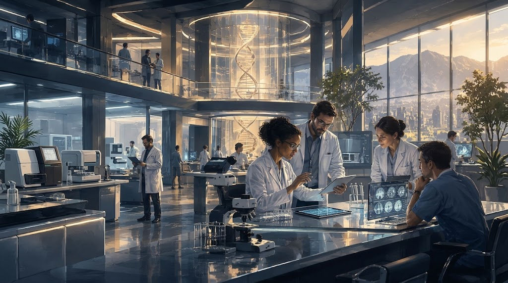
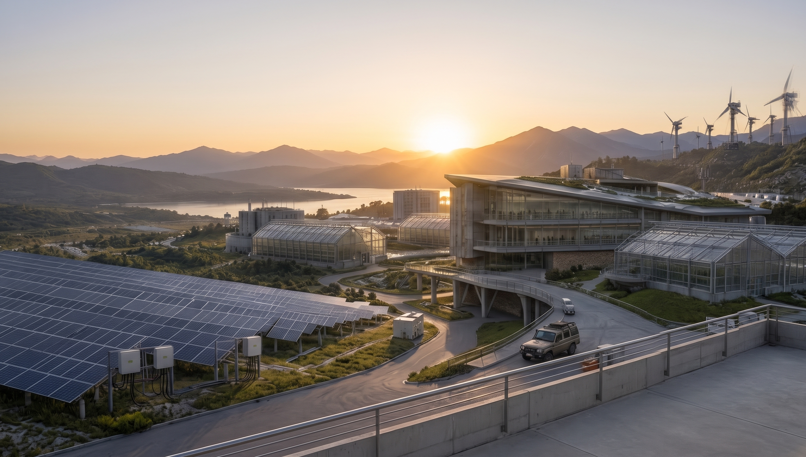

Uma visão que atravessa gerações.
A LUME nasceu na Europa no período de reconstrução que sucedeu a Primeira Guerra Mundial. Ao longo de mais de um século, ampliou sua atuação em ciência, medicina, energia e desenvolvimento tecnológico.
Mais de um século de descobertas.
Uma seleção de marcos institucionais registrados no arquivo público.
Os primeiros anos
Após o fim da Primeira Guerra Mundial, a Lumière inicia atividades voltadas à reconstrução, infraestrutura e pesquisa aplicada.
Pesquisa e desenvolvimento
A organização amplia seus laboratórios e passa a financiar projetos científicos em diferentes áreas do conhecimento.
Ciência médica
Novos programas aproximam pesquisa científica e medicina, dando origem a uma rede internacional de colaboração com hospitais e instituições acadêmicas.
Novas fronteiras energéticas
Projetos de pesquisa energética passam a integrar oficialmente o portfólio internacional da organização.
Rede internacional de pesquisa
Centros de pesquisa e parceiros acadêmicos passam a operar dentro de uma estrutura internacional coordenada.
Uma nova identidade
Após uma ampla reestruturação administrativa, a organização passa a utilizar oficialmente a marca LUME. Gideon Thorne assume a direção pública.
Ciência e cultura
A Fundação LUME amplia sua atuação para educação, cultura e iniciativas de divulgação científica.
Arte experimental
Programas de apoio cultural passam a incentivar projetos que aproximam tecnologia, expressão e experiência humana.
Artes & Percepção
Uma nova frente da Fundação reúne artistas e pesquisadores interessados nas relações entre percepção, memória e comportamento.
Um novo horizonte
A LUME mantém projetos internacionais em medicina, energia e pesquisa, enquanto amplia suas iniciativas científicas e culturais.
Uma história também pode ser lida nos registros.
A linha do tempo reúne apenas marcos gerais. Notícias, relatórios e comunicados preservados no arquivo público registram acontecimentos específicos ao longo dos anos.
Três áreas.
Uma rede de conhecimento.

Medicina
Pesquisa biomédica, diagnóstico e tecnologias voltadas para ampliar o acesso e a precisão dos cuidados em saúde.

Energia
Pesquisa aplicada para novas formas de geração, armazenamento e utilização eficiente de energia.

Pesquisa
Projetos multidisciplinares dedicados a perguntas que ainda não possuem respostas.